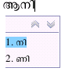
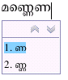
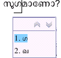
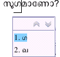

സ്വതന്ത്ര മലയാളം കമ്പ്യൂട്ടിങ്ങ്
എന്റെ കമ്പ്യൂട്ടറിനു് എന്റെ ഭാഷ
മലയാളത്തിനു് ഡിജിറ്റല് വസന്തം
സ്വതന്ത്ര മലയാളം കമ്പ്യൂട്ടിങ്ങ്
സ്വതന്ത്ര സോഫ്റ്റ്വെയര് അടിസ്ഥാനമാക്കി മലയാള ഭാഷയുടെ ഡിജിറ്റല് ഭാവിയ്ക്ക് വേണ്ടിയുള്ള സാങ്കേതികവിദ്യകള് രൂപകല്പന ചെയ്യുകയും വികസിപ്പിച്ചെടുക്കുകയും ചെയ്യുന്ന സന്നദ്ധപ്രവര്ത്തകരുടെ കൂട്ടായ്മ.- സംരംഭം തുടങ്ങിയത് : 2001
- വെബ് സൈറ്റ് : http://fci.wikia.com/wiki/SMC
- സംരംഭ നിര്വ്വഹണം: http://savannah.nongnu.org/projects/smc
- ചര്ച്ചകള്: smc-discuss@googlegroups.com
സംരംഭത്തിന്റെ ലക്ഷ്യങ്ങള്
- കമ്പ്യൂട്ടര് ഉപയോഗിക്കാനുള്ള ഭാഷയുടെ കടമ്പകള് ഇല്ലാതാക്കുക.
- ഭാഷാ കമ്പ്യൂട്ടിങ്ങിനു് വേണ്ട സാങ്കേതിക വിദ്യകള് സ്വതന്ത്ര സോഫ്റ്റ്വെയറുകള് അടിസ്ഥാനമാക്കി വികസിപ്പിക്കുക
- സ്വതന്ത്ര മലയാളം കമ്പ്യൂട്ടിങ്ങ് വികസിപ്പിക്കുന്ന സോഫ്റ്റ്വെയറുകള് സ്വതന്ത്ര സോഫ്റ്റ്വയറുകള് ആയിരിക്കും
- മലയാള ഭാഷയെ അതിന്റെ തനിമയും സൗന്ദര്യവും ചോരാതെ ഡിജിറ്റല് യുഗത്തിലേയ്ക്ക് നയിക്കുക.
എന്തുകൊണ്ട് സ്വതന്ത്ര സോഫ്റ്റ്വെയര്?
- ജനാധിപത്യ രീതിയിലും മാനവികതയിലും ഊന്നിയ സാങ്കേതികവിദ്യാ വികസന രീതി
- ജനകീയ പങ്കാളിത്തം
- തുറന്ന ചര്ച്ചകള്
- നിരന്തരമായ നവീകരണത്തിനും തിരുത്തലിനുമുള്ള സൗകര്യം
- ഭാഷ അത് ഉപയോഗിക്കുന്നവരുടെ കരങ്ങളില് ഭദ്രം
- സാങ്കേതിക വിദ്യയില് സ്വയം പര്യാപ്തത
സംരംഭങ്ങള്
- പ്രാദേശികവത്കരണം
- ലേഖനോപകരണങ്ങള് Text Utilities
- അക്ഷരരൂപങ്ങള് Fonts
- സംഭാഷണോപകരണങ്ങള് Speech tools
- ഭാഷാപരിശീലനം
- കല
പ്രാദേശികവത്കരണം
സ്വതന്ത്ര സോഫ്റ്റ്വെയറുകളുടെ മലയാള പതിപ്പുകളുടെ വികസനം.- ഗ്നോം മലയാളം: സ്വതന്ത്ര പണിയിടമായ(Desktop) ഗ്നോമിന്റെ മലയാളവത്കരണം. പൂര്ണ്ണമായും മലയാളത്തിലുള്ള ഒരു പണിയിട സംവിധാനമാണ് ലക്ഷ്യം. ഈ സംരംഭത്തിന്റെ 80% പൂര്ത്തിയായി. സ്വതന്ത്ര മലയാളം കമ്പ്യൂട്ടിങ്ങിലെ "ഗ്നോം മലയാളം ടീം" ഈ ഉപസംരംഭം നയിക്കുന്നു.
- ഗ്നോം 2.20 ലക്കത്തില് മലയാളം ഔദ്യോഗികമായി ചേര്ക്കപ്പെട്ടു.
പ്രാദേശികവത്കരണം
സ്വതന്ത്ര സോഫ്റ്റ്വെയറുകളുടെ മലയാള പതിപ്പുകളുടെ വികസനം.- ഡെബിയാന് മലയാളം:ഡെബിയാന് സ്വതന്ത്ര പ്രവര്ത്തകസംവിധാനത്തിന്റെ(Operating System) മലയാളവത്കരണം. ഈ പ്രവര്ത്തനസംവിധാനം ഇപ്പോള് പൂര്ണ്ണമായും മലയാളത്തില് ഇന്സ്റ്റാള് ചെയ്യാം. സ്വതന്ത്ര മലയാളം കമ്പ്യൂട്ടിങ്ങിലെ "ഡെബിയാന് മലയാളം ടീം" ഈ ഉപസംരംഭം നയിക്കുന്നു.
പ്രാദേശികവത്കരണം
സ്വതന്ത്ര സോഫ്റ്റ്വെയറുകളുടെ മലയാള പതിപ്പുകളുടെ വികസനം.- KDE മലയാളം:മറ്റൊരു സ്വതന്ത്ര പണിയിടമായ(Desktop) KDE യുടെ മലയാളവത്കരണം. ഈ സംരംഭം ആരംഭിച്ചിട്ടേ ഉള്ളൂ.. സ്വതന്ത്ര മലയാളം കമ്പ്യൂട്ടിങ്ങിലെ "KDE മലയാളം ടീം" ഈ ഉപസംരംഭം നയിക്കുന്നു.
പ്രാദേശികവത്കരണം
സ്വതന്ത്ര സോഫ്റ്റ്വെയറുകളുടെ മലയാള പതിപ്പുകളുടെ വികസനം.പ്രാദേശികവത്കരണ സംഘാംഗങ്ങള്: പ്രവീണ് എ, അനിവര് അരവിന്ദ് , സന്തോഷ് തോട്ടിങ്ങല്, , അനി പീറ്റര്, മോബിന്, ഹിരണ് വേണുഗോപാല്, സുരേഷ് പി, മണിലാല്, അനൂപ് പി തുടങ്ങി മുപ്പതിലേറെപ്പേര്
ലേഖനോപകരണങ്ങള്
സ്വനലേഖ: ശബ്ദാത്മക നിവേശക രീതി- ലിപ്യന്തരണ വിദ്യയുപയോഗിച്ച് പ്രവര്ത്തിക്കുന്ന നിവേശക രീതി.(ഉദാ: തൊഴുക : thozhuka , സരിഗമപധനി: sarigamapadhani)
- എഴുതിക്കൊണ്ടിരിക്കുമ്പോള് അക്ഷരത്തെറ്റൊഴിവാക്കാനുള്ള സൂചനകള് ലഭ്യമാക്കുന്നു.
- യാതൊരു പരിശീലനവുമില്ലാതെ വളരെ വേഗം മലയാളം എഴുതാന് സഹായപ്രദം.
- രചയിതാവ്: സന്തോഷ് തോട്ടിങ്ങല്, സ്വതന്ത്ര മലയാളം കമ്പ്യൂട്ടിങ്ങ്.


 

ലേഖനോപകരണങ്ങള് (തുടരുന്നു...)
ലളിത: ബോല്നാഗരി അടിസ്ഥാനമാക്കിയുള്ള കീബോര്ഡ് വിന്യാസം- ഗ്നു ലിനക്സ് പ്രവര്ത്തകസംവിധാനത്തിന്റെ സഹജമായ നിവേശകരീതിയായ XKB ക്ക് വേണ്ടിയുള്ള ലളിതമായ ഒരു നിവേശക രീതി.
- ഹിന്ദിയിലെ പ്രശസ്തമായ ബോല്നാഗരി നിവേശകരീതി അടിസ്ഥാനമാക്കി വികസിപ്പിച്ചത്.
- ഇന്സ്ക്രിപ്റ്റ് കീ വിന്യാസത്തിന്റെ ഒരു ലളിതവത്കരണം
- രചയിതാവ്: ജിനേഷ് കെ, സ്വതന്ത്ര മലയാളം കമ്പ്യൂട്ടിങ്ങ്.
- ഇത് സ്വതന്ത്ര മലയാളം കമ്പ്യൂട്ടിങ്ങിന്റെ ഗൂഗിള് സമ്മര് ഓഫ് കോഡ് പരിപാടിയുടെ ഭാഗമായി വികസിപ്പിച്ച സംരംഭം.
ലേഖനോപകരണങ്ങള് (തുടരുന്നു...)
സ്പെല്ലിങ്ങ് ചെക്കര്: ഗ്നു ആസ്പെല് മലയാളം സ്പെല്ലിങ്ങ് ചെക്കര്- 142000 മലയാളം വാക്കുകള് അടങ്ങിയ മലയാള ലിപി വിന്യാസ പരിശോധകന്.
- ഇന്ത്യയിലെ ഏറ്റവും വലിയ പദസഞ്ചയമുള്ള ലിപി വിന്യാസ പരിശോധകന്.
- അക്ഷരത്തെറ്റുകള് കണ്ടുപിടിക്കുകയും അവയുടെ ശരിയായ മലയാളം വാക്കുകള് നിര്ദ്ദേശിക്കുകയും ചെയ്യുന്നു.
- പ്രശസ്ത സ്വതന്ത്ര സ്പെല്ലിങ്ങ് ചെക്കറായ ഗ്നു ആസ്പെല് അടിസ്ഥാനമാക്കി വികസിപ്പിച്ചത്.
- രചയിതാവ്: സന്തോഷ് തോട്ടിങ്ങല്, സ്വതന്ത്ര മലയാളം കമ്പ്യൂട്ടിങ്ങ്.
ലേഖനോപകരണങ്ങള് (തുടരുന്നു...)
സ്പെല്ലിങ്ങ് ചെക്കര്: ഗ്നു ആസ്പെല് മലയാളം സ്പെല്ലിങ്ങ് ചെക്കര്അക്ഷരരൂപങ്ങള്
- മീര: തനത് മലയാള ലിപിയിലുള്ള യുണിക്കോഡ് അക്ഷരരൂപം വികസിപ്പിച്ചത്: ഹുസ്സൈന് കെ എച്, സുരേഷ് പി, സ്വതന്ത്ര മലയാളം കമ്പ്യൂട്ടിങ്ങ്.
സംഭാഷണോപകരണങ്ങള്
ധ്വനി: മലയാളം വാക്യ-ഭാഷണ പരിവര്ത്തിനി Text to Speech converter- ഭാരതീയ ഭാഷകള്ക്ക് വേണ്ടി രൂപകല്പന ചെയ്ത സ്വതന്ത്ര Text to Speech converter
- 2000 ത്തില് സിമ്പ്യൂട്ടര് സംരംഭത്തിന്റെ ഭാഗമായി വികസിപ്പിച്ചെടുത്തു.
- ഇന്ത്യന് ഇന്സ്റ്റിറ്റ്യൂട്ട് ഓഫ് സയന്സ്, ബാംഗ്ളൂരിലെ ഡോ: രമേഷ് ഹരിഹരന് ആണ് ആദ്യ രചയിതാവ്
- 2006 ല് സന്തോഷ് തോട്ടിങ്ങല്, സ്വതന്ത്രമലയാളം കമ്പ്യൂട്ടിങ്ങ്, ധ്വനിയെ സ്വതന്ത്ര പ്രവര്ത്തക സംവിധാനങ്ങളില് പ്രവര്ത്തിക്കുന്ന രീതിയില് പരിവര്ത്തനം ചെയ്തു. മലയാളം പിന്തുണ ചേര്ത്തു.
- മലയാളം കൂടാതെ ഹിന്ദി, കന്നഡ ഭാഷകള് ധ്വനിയ്ക് സംസാരിയ്ക്കാന് കഴിയും.
- ഈ വര്ഷം മാര്ച്ചില് കോഴിക്കോട് NIT യില് നടന്ന FOSS meet നിടയില് അവതരിപ്പിച്ചു. റോബോട്ടിക് സംഭാഷണ ശൈലി മാറ്റാന് ശ്രമിച്ച് കൊണ്ടിരിക്കുന്നു..
സംഭാഷണോപകരണങ്ങള് (തുടരുന്നു...)
ശാരിക: സ്വരസംവേദിനി- മനുഷ്യസംഭാഷണങ്ങളെ തിരിച്ചറിഞ്ഞ് വിവിധങ്ങളായ പ്രവര്ത്തികള് ചെയ്യുന്നതിനായുള്ള ആദ്യ ഭാരതീയ ശ്രമം.
- ആദ്യ ഘട്ടത്തില് തിരഞ്ഞെടുത്ത 50 ഓളം വാക്കുകള് മനസ്സിലാക്കി കമ്പ്യൂട്ടറിലെ ജാലകങ്ങള്, ഫയലുകള് എന്നിവ കൈകാര്യം ചെയ്യാനുള്ള ശ്രമം
- സാങ്കേതിക വിദ്യയുടെ സങ്കീര്ണ്ണതകളേറെയുള്ള ഈ സംരംഭത്തിന്റെ വികസന പ്രക്രിയ 75% പൂര്ണ്ണമായി.
- സ്വതന്ത്ര മലയാളം കമ്പ്യൂട്ടിങ്ങ്, ഗൂഗിള് സമ്മര് ഓഫ് കോഡ് പരിപാടിയിലെ ഒരു സംരംഭം.
- ഇന്റര്നാഷണല് ഇന്സ്റ്റിറ്റ്യൂട്ട് ഓഫ് ഇന്ഫര്മേഷന് ടെക്നോളജി, ബാംഗ്ളൂരില് വച്ച് IEEE യുടെ നേതൃത്വത്തില് നടന്ന സമ്മര്സ്കൂളില് പരിശീലനം.
- വികസിപ്പിച്ച് കൊണ്ടിരിക്കുന്നത്: ശ്യാം കാരനാട്ട്, എം ഇ എസ് കോളേജ് ഓഫ് എന്ജിനീയറിങ്ങ്, കുറ്റിപ്പുറം.(മാര്ഗ്ഗനിര്ദ്ദേശം: സന്തോഷ് തോട്ടിങ്ങല്)
ഭാഷാപരിശീലനം
- ഭാഷാപരിശീലനം
- ടക്സ് ടൈപ്പ് ടൈപ്പിങ്ങ് പഠന സഹായി : ഇന്സ്ക്രിപ്റ്റ് കീ വിന്യാസം രസകരമായ കളികളിലൂടെ പരിശീലിയ്ക്കാനുള്ള സോഫ്റ്റ്വെയര്.
- വികസിപ്പിച്ചത്: മോബിന് എം , വിമല് രവി, ശ്രേയസ് കെ , ശ്രീരഞ്ജ് ബി, പ്രിന്സ് കെ ആന്റണി.
കല
കമ്പ്യൂട്ടറില് മലയാള സംസ്കാരത്തിനും പാരമ്പര്യവുമനുസരിച്ചുള്ള രംഗവിധാനം, ചിത്രങ്ങള്, പശ്ചാത്തലസജ്ജീകരണം എന്നിവയുടെ വികസനംഈ ഉപസംരംഭത്തിലെ ആദ്യത്തെ ഇനം: മലയാളം ഡിജിറ്റല് മഴ
- ഹോളിവുഡ് സൂപ്പര്ഹിറ്റ് ചലച്ചിത്ര പരമ്പരയായ മെട്രിക്സ് അവതരിപ്പിച്ച ഡിജിറ്റല് മഴയുടെ മലയാള ദൃശ്യാവിഷ്കാരം.
- സ്വതന്ത്ര പ്രവര്ത്തകസംവിധാനങ്ങളില് സ്ക്രീന് സേവറായി ഉപയോഗിക്കാവുന്നത്.
- ഇരുണ്ട പശ്ചാത്തലത്തില് വിവിധ തരത്തില് പൊഴിയുന്ന മലയാളം അക്ഷരങ്ങള്...
- വികസിപ്പിച്ചത്: സന്തോഷ്
സ്വതന്ത്ര മലയാളം കമ്പ്യൂട്ടിങ്ങ്
ശുഭം